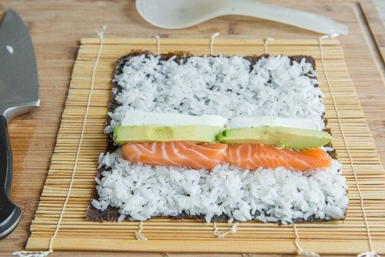
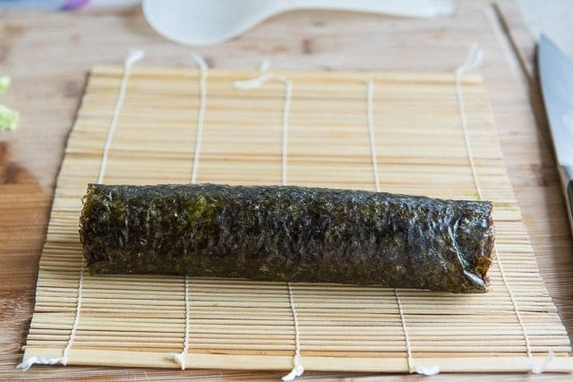

Sushi

""
INGREDIENTS
- 6 sheets sushi seaweed aka nori
- 1 batch prepared sushi rice
- 1/2 lb sashimi-grade raw salmon or desired raw fish of choice
- 4 oz cream cheese sliced into strips
- 1 avocado sliced
- soy sauce for servingheight="200" width="250"
INSTRUCTION
- Place the seaweed on a bamboo mat, then cover the sheet of seaweed with an even layer of prepared sushi rice. Smooth gently with a rice paddle.
- Layer salmon, cream cheese, and avocado on the rice, and roll it up tightly. Slice with a sharp knife, and enjoy right away with soy sauce.
INSTRUCTION-PICTURES





Back to menu